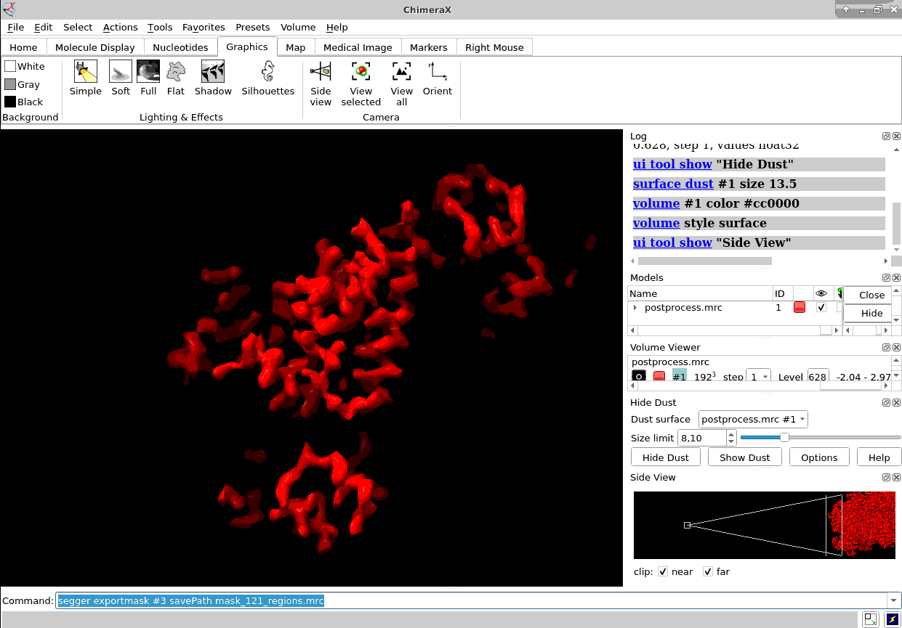

{kind=link}
Tomography in Scipion
Scipion now talks cryo-electron tomography! It s been a long journey of developing and beta-testing the new set of plugins to make cryo-ET user-friendly and remove some of the main obstacles of this image processing pipepline: traceability, software interoperability and results visualization.
Integration
In the same way as we’ve done it for single-particle analysis (SPA) we (a set of developers and beta-testers) have integrated most of the relevant software used in cryoET so you, as a user, can forget about moving files around, launching complicated commands or convert data and metadata. Scipion Tomo does it for you. Here is a short list of the software integrated today (26th April 2023), but since Scipion is extensible by plugins we hope more developers will join the project to integrate their nice software into this platform.
Motioncor2 (scipion-em-motioncorr)
Xmipp (tomo) (scipion-em-xmipptomo)
Imod (scipion-em-imod)
Aretomo (scipion-em-aretomo)
tomo3d (scipion-em-tomo3d)
IsoNET (scipion-em-isonet)
NovaCTF (scipion-em-novactf)
Cistem (scipion-em-cistem)
gCTF (scipion-em-gctf)
Eman2: pickings, initial model, alignment and reconstruction (scipion-em-emantomo)
Dynamo: picking, alignment and reconstruction (scipion-em-dynamo)
cryoCARE (scipion-em-cryocare)
crYOLO: picking, filament picking, and training (scipion-em-sphire)
PySeg (scipion-em-pyseg)
DeepFinder (scipion-em-deepfinder)
TomosegmemTV (scipion-em-tomosegmemtv)
Tomotwin (scipion-em-tomotwin)
Relion: tomo jobs (scipion-em-reliontomo)
Susantomo (scipion-em-susantomo)
Continuousflex (scipion-em-continuousflex)
In brackets, the plugin that integrates the software and in most cases installs it too!
Here you can see how one of our tutorials workflows mixes some of the software integrated.
Please, note that relion methods in this case are SPA ones (2D classification and 2D class ranker) in what we have called the “SPA leap”. This is done by projecting subtomograms on any of the 3 axis to get 2D particles. Once flattened, particles can be send to ANY SPA available protocol, in this case Relion’s 2D classification, but could have used Cryosparc as well. Then with the “subset” we go back to 3D world filtering subtomograms based on their 2d SPA averages.
Current status
Note that current status is BETA. Many of the protocols are even more stable but we are not that sure for others. Ad today (3rd May 2023) the following are the detailed weaknesses of the workflow we are aware of:
Eman: Refinement does not take into account the CTF. Best approach would be to CTF correct the images. Although even this has to be tested.
Deepfinder, although test are passing might need a review.
CryoCARE: also might need a review.
Continuousflex needs adaptation to tomography model.
Results and its Visualization
Visualization is quite important in any image processing pipeline. Scipion has a visualization engine that with little effort allow developer to integrate existing visualization tools from a 3rd party software, or define new way of visualizing the results.
Here you can see how easily you can visualise tilt series using the versatile Imod’s 3dmod program.
Moreover, for viewing a set of tomography CTFs we have developed a custom viewer that plots the defocus values and resolution along the selected tilt series and its basic metadata.
See in how many different ways you can visualise any set of 3D coordinates: Tomoviz (with and without orientations), Dynamo or Eman2, napari, your choice!!.
We have been creative also and used Imod’s fiducial viewer to plot relion4 projected 3d coordinates as a way to double check if all is in place before doing relion’s per particle per tilt refinement. Be aware that you can enter relion4 tomogram pipeline having aligned you tilt series with aretomo (for example). We will “trick” relion4 simulating the imod files it needs!.
Of course, ChimeraX is integrated to render subtomogram averages as the one at 3.7 Å reached 100% inside Scipion (staring from relion4’s HIV capsid tutorial dataset) and before any CTF or tilt series refinement.
Once you have the proper average you could also map it back to the original tomogram to see in situ features using xmipptomo map back protocol.
Validation
As one of our colleagues here uses to say: “The good thing of cryo em methods is that they will always give you a result. The bad thing is that they will always give you a results”. ;-).
In the same way we have done with SPA processing we are crating validations tools to verify the quality of your results before going forward. This is already happening with “xmipptomo - subtomo alignemnt consensus”, “tomo - tilt series consensus alignment”, “tomoviz - picking consensus” or “xmipp - consensus clustering 3d”
Basic operations
Of course all this comes out of the box with all the functionality that scipion already provides for any project: * Color labeling * Duplicating a branch of the workflow * Resetting/restarting a branch of the workflow * Workflow templates (there are some already for imod automatic tilt series alignment or pySeg picking) * Workflow planning and scheduling * Streaming: As of today streaming covers motion correction + tilt series composition. More to come! * Easy subseting: manual or parametrized * Metadata plotting * Third party installation. Yes, when authorized, we offer installation (optional) for the software we integrate. * Filter by normals * Remove duplicates * …
How to get it?
As simple as installing the plugins you want to use. Obviously you first need to get scipion installed and then use the plugin manager to install the tomography plugins. Each plugin will install the software behind it integrates (by default) but can be canceled in case you already have it. In this case, see how to do it here: link existing software
One more thing
Please, please … cite us! and cite all the great software we integrate too!. Citations is what fuels all the software. Yes, Scipion kind of “hides” in many cases the software it integrates but there is no way to do it otherwise. For every protocol you have all the references in bibtex format available and quite easily you can get all the references involved in your project. Please do so!.
Brought to you by
Led by I2PC (at Madrid) but with key contributions of other developers and betatesters all over the world. We would like to specially congratulate Grigory Sharov for been also here in tomography as well as in SPA, Antonio Martinez Sanchez (pySeg developer) for assisting us integrating pySeg, Daniel Castaño for guiding us into Dynamo world, Emmanuel Moebel for integrating deepfinder, Tim Oliver Buchholz for integrating cryoCARE, Mohamad Harastani for his great job with continuousflex, “Quino” for guiding us into relion4 tomography, Bram Koster, Borja Rodriguez, Ana Cuervo and Patricia Losana for betatesting since the very begining all this code we now released. It was painful at times, I know, but I hope it payed off. Of course, the whole Madrid’s developers team (Scipion core and Xmipp developers) and leaders: Jose Maria Carazo and Carlos Oscar Sanchez-Sorzano
Is that it?
NO! But for now you can start enjoying tomography processing but be sure more integrations will come. In the oven, we have, deepict, per-particle per tilt in eman, subtomogram averaging in xmipp, streamifying more protocols … and more importantly, that new “new method” that will appear and revolutionise the field …. will very likely be integrated…. and YES! M, as soon as can run on linux it will be here too
If you like what you’ve read, either if you are facility staff, a regular image processing user or a developer, please, join us at our discord workspace: You are very welcome! and the people there will be happy to assist you.
Additional resources
Here you can find some valuable resources to complement the contents described: